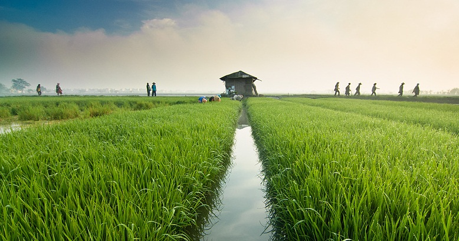

Selamat Datang di AI AGRI LAB
Prediksi Penyakit Tanaman Padi Berbasis Artificial Intelligence untuk Pertanian Indonesia yang Lebih Maju.
Mulai Analisis Gambar Padi Anda
Pilih Gambar Daun Padi
seret & lepas atau klik untuk memilih file
Mendukung format PNG, JPG, atau WEBP
Pratinjau Gambar
Hasil Analisis
Nama Penyakit
Tingkat Keyakinan
75%
Deskripsi
Ini adalah deskripsi statis placeholder untuk penyakit yang terdeteksi.
Rekomendasi Penanganan
Ini adalah rekomendasi penanganan statis. Gunakan pestisida X dan Y.
Kenapa Menggunakan AI AGRI LAB?
Cepat & Akurat
Dapatkan hasil prediksi penyakit secara instan dengan tingkat akurasi tinggi berkat model AI kami.
Mudah Digunakan
Antarmuka yang intuitif. Cukup unggah gambar dari ponsel atau komputer Anda untuk memulai.
Berbasis AI
Didukung oleh model *Deep Learning* yang dilatih pada ribuan data gambar penyakit tanaman padi.